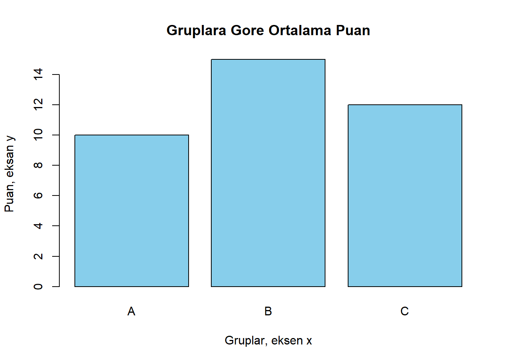
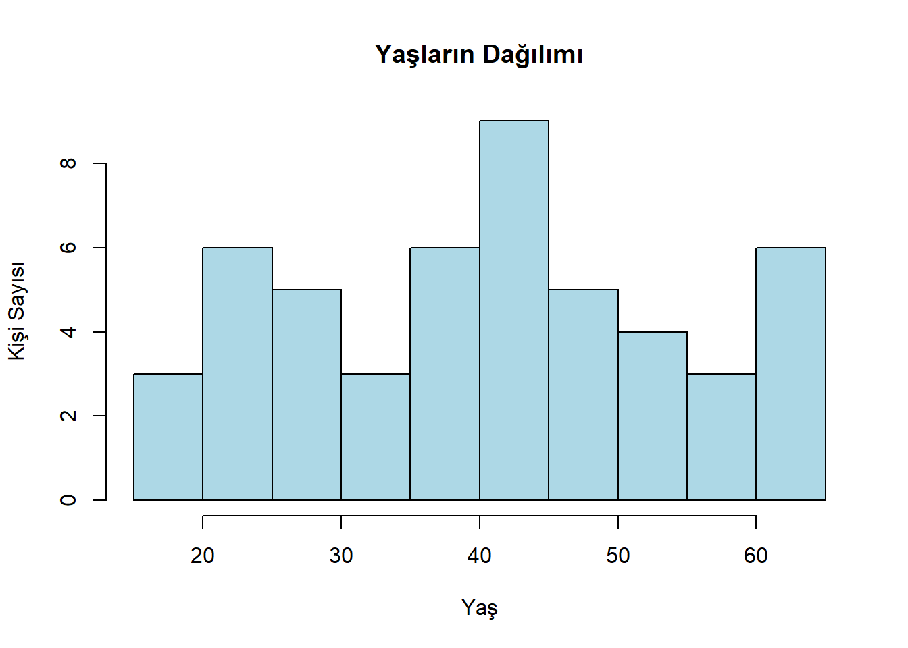
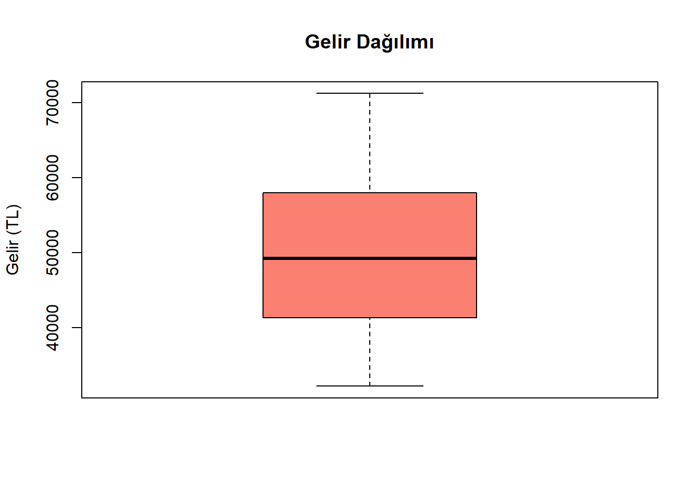
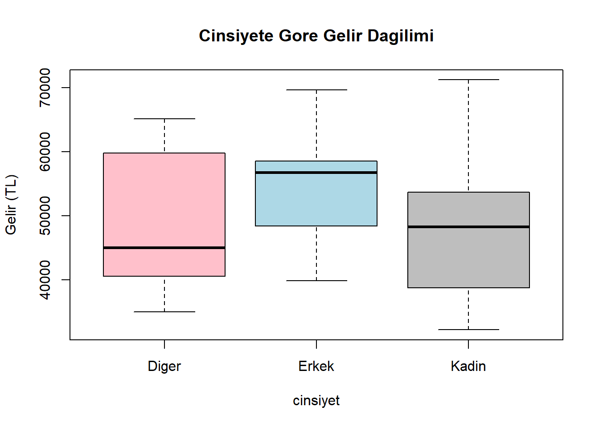
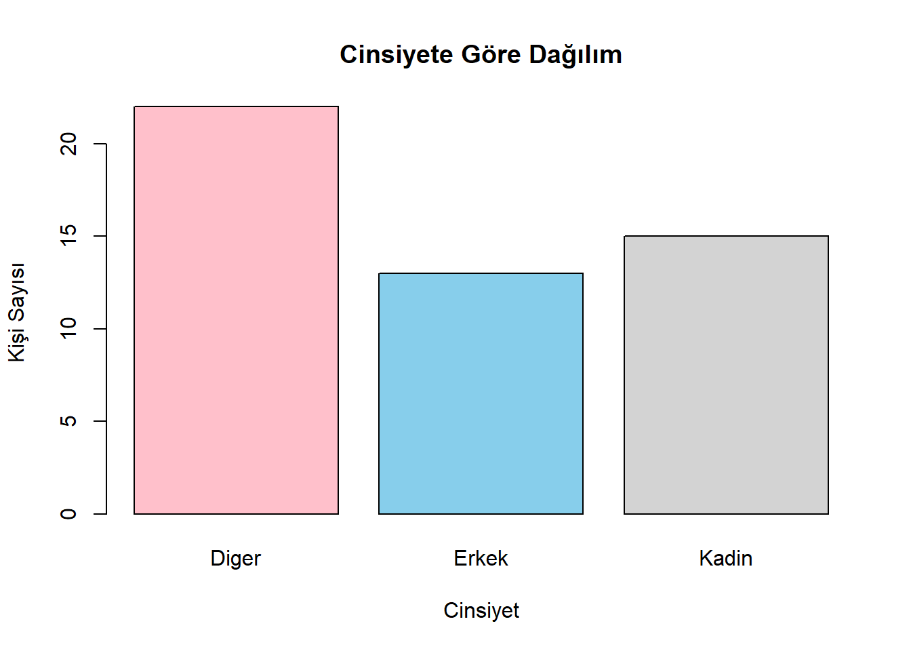
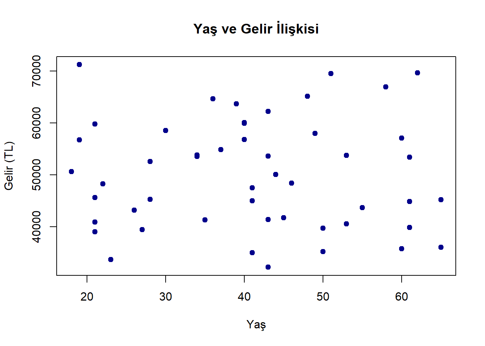

R Base ile Verilerin Görselleştirilmesi
Base R ile Verilerin Görselleştirilmesi
Verilerin Görselleştirilmesi
Ölçüm, sayım, deney, gözlem ya da araştırma yolu ile elde edilen nitel ve nicel verilerden oluşan veri setlerinin anlaşılması ve yorumlanmasında veri görselleştirmesi yöntemleri kullanılmaktadır. Veri görselleştirmesi grafik, tablo, harita gibi yöntemlerin kulanılması yolu ile verilerin yorumlanmasını kolaylaştırmayı sağlamaktadır. Görselleştirme hem analizlerin daha estetik görünmesini sağlamaktadır hem de verilerin hızlı anlaşılmasını sağlayarak keşif, ve karar alma süreçlerini kolaylaştırmaktadır.
Tarihçe
Veri görselleştirme yöntemleri yüzyıllardır kullanılmaktadır. 18. yy’da yaşamış olan İskoç mühendis William Playfair çubuk grafik, çizgi grafikk ve pasta grafiklerin öncüsü olmuştur. 19. yüzyılda da Florence Nightingale savaş zamanlarındaki sağlık koşullarını göstermek için “gül diyagramı”nı kullanmıştır.
20.nci yüzyılda ise bilgisayarlar gelişmiş ve veri görselleştirme hızlı bir ilerleme kaydetmiştir. 21. yüzyılda iseinteraktif görseller, büyük veri, yapay zeka ile birlikte bu alan daha önemli hale gelmiştir.
Neden Önemlidir?
Sayısal veriler arasındaki ilişkilerin fark edilmesini,
Eğilimlerin, örüntülerin ve aykırı değerlerin tespitini kolaylaştırmaktadır.
Bir veri kümesinin en kullanışlı bilgilerinin vurgulanmasını sağlamaktadır.
Hangi Veri ile Hangi Tip Grafik Kullanılır?
Veri türleri ile kullanılacak grafik tipi arasında doğrudan bir ilişki bulunmaktadır. Veri yapısına veya analiz amacına göre grafik türü seçilmesi önem taşımaktadır. Aşağıda yaygın veri türleri ve uygun grafik türleri özetlenmektedir.
Kategorik Veriler (Nitel Veriler)
Kategorik veriler, sınıflandırmalar veya etiketlerden oluşmaktadır. Örneğin; cinsiyet, renk, şehir, vb.
Bu verilere uygun olan grafikler,
Çubuk Grafik (Barplot)
Pasta Grafik (Pie Chart)
Sayısal Veriler (Nicel Veriler)
Bu veriler ölçülebilir değerlerdir. Örneğin; gelir, yaş, ağırlık, sıcaklık vb.
Bu verilere uygun olan grafikler;
Histogram
Kutu Grafiği (Boxplot)
İki Sayısal Değişken Arasındaki İlişki
İki nicel değişkenin arasındaki ilişki incelenmek istendiğinde kullanılmaktadır.
Uygun Grafik;
- Dağılım Grafiği (Scatter Plot)
Zamana Bağlı Veriler (Zaman Serileri)
Zaman içinde değişen veriler için kullanılmakatdır.
Uygun Grafik;
- Çizgi Grafiği (Line Chart)
Eksenler ve Etiketler
Veriler görselleştrilirken oluşturulan grafiğin doğru anlaşılabilmesi amacıyla eksenler (x ve y) ve bu eksenlere ait etiketler (açıklayıcı metinler) büyük önem taşımaktadır.
Eksenler: veri değerlerinin nerede konumlandığını gösterirken
Etiketler: neyin neye karşı çizildiğini anlatmaktadır
X ekseninde genellikle bağımsız değişken yer alır. Bağımsız değişken bir deneye veya analizde diğer değişkenleri etkilediği düşünülen, araştırmacı tarafından kontrol /manipüle edilen değişkendir. Daha basit bir şekilde ifade etmek gerekirse “neden” ya da “etki yaratan” değişken denilebilir..
Y ekseninde isew genellikle bağımlı değişken bulunmaktadır. Bağımlı değişken bir deney/analizde bağımsız değişkenin etkisi ile değiştiği düşünülen ve ölçülen değişkendir. Basitçe “sonuç”, ya da “etkilenen” değişken olarak görülebilir.
Örneğin sulama miktarının bir bitkinin büyüme hızına etkisi araştırılıyorsa;
Bağımsız Değişken: Sulama miktarı (örn; 500ml, 1000ml)
Bağımlı Değişken: Bitkinin büyüme hızı (örn: günlük 3mm, aylık 4 cm)
Öneriler:
- Etiketlerde Gelir (TL), Sıcaklık (°C) gibi birimlerin belirtilmesi anlamayı kolaylaştırmaktadır.
- Eksensiz veya etiketsiz grafikler, görsel oluşsa da anlamsız olabilmektedir.
- Grafik başlığı olmadan verilen mesaj eksik kalabilmektedir.
Örnek Veri Seti ile Grafik Türlerinin Uygulanması
Bu bölümde gerçek hayatta karşılaşabileceğimiz türden, yapay bir veri seti olan gelir_calisma kullanılarak farklı grafik türlerinin nasıl oluşturulduğu gösterilecektir. Veri setinin R’a yüklenmesi için gerekli kodlar aşağıda verilmektedir.
Code
veri <- read.csv("gelir_calisma.csv")
# veri
head(veri) # veri setinin ilk 5 satırını göstermek için kullanılmıştır. yalnızca veri yazılarak çalıştırılsaydı, R tüm veri setini gösterebilirdi. Burada veri yapısını kısaca görmek amacıyla kullnaılmıştır head fonksiyonu. isim yas gelir calisma_durumu cinsiyet
1 kisi1 44 50020.54 TRUE Kadin
2 kisi2 27 39433.33 FALSE Diger
3 kisi3 65 36008.41 TRUE Diger
4 kisi4 40 59950.67 FALSE Diger
5 kisi5 62 69623.51 FALSE Erkek
6 kisi6 37 54824.39 FALSE DigerGörüldüğü gibi, veri setinde farklı değişken türleri bulunmaktadır.
Sayısal değişkenler: yas, gelir
Kategorik değişkenler: cinsiyet, calisma_durumu
ID niteliği taşıyan: isim
Bu değişkenler, farklı türlerde veriler olup, her veri türünün kendine uygun bir grafik oluşturmada kullanılması önem taşımaktadır. Yukarıda veri tipi-grafik önerileri zaten yapılmış olup, aşağıda bu veriler ile oluşturulmuş örnek grafikler sunulmaktadır.
Histogram Grafiği Oluşturulması
Histogram grafiği, sayısal (nicel) verilerin dağılımını görselleştirmek için kullanılan bir grafik türüdür. Verilerin sıklıklarını (ne kadar sık meydana geldiklerini) belirli aralıklara (bin, yüz) bölerek göstermektedir. Her bir çubuk, belirli bir değer aralığındaki veri noktalarının sayılarını temsil etmektedir.
Sayısal verilerini dağılımını anlamak için,
Verilerin yoğunlaştığı bölgeleri, aykırı değerleri veya eğilimleri görmek için kullanılmakatdır.
Çubuk grafik, görsel olarak histogram grafiğine benzer bir grafiktir. Ancak histogramda çubuklar birbirine bitişik oluşmaktadır. Sayısal verilerin sıklık dağılımını görselleştirmektedir. R2da histogram grafiği oluşturmak için “hist” fonksiyopnu kullanılmaktadır.
Code
# Yaşların Dağılımı
hist(veri$yas,
col = "lightblue",
main = "Yaşların Dağılımı",
xlab = "Yaş",
ylab = "Kişi Sayısı")
-- Veri setindeki başka hangi değişken ile histogram grafiği oluşturulabilir?
Kutu (Boxplot) Grafiği
Kutu Grafiği sayısal (nicel) verilerin dağılımını, merkezi eğilimini, yayılımını ve aykırı değerlerini görselleştirmek için kullanılan bir grafik türüdür. Verilerin istatistiksel özetini bir grafikte göstermeyi sağlar ve farklı grupların karşılaştırılmasında etkilidir.
Bir kutu grafiği aşağıdaki istatistikleri özetlemektedir;
- En küçük değer (minimum)
- Birinci çeyrek (Q1)
- Medyan (Q2)
- Üçüncü Çeyrek (Q3)
- En büyük değer (maksimum)
R’da boxplot grafiği oluşturmak için “boxplot” fonksiyonu kullanılmaktadır.
Code
boxplot(veri$gelir,
main = "Gelir Dağılımı",
ylab = "Gelir (TL)",
col = "salmon")
Not: grafikteki alt çizgi min, kutunun alt sınırı q1, ortadaki siyah çizgi medyan, kutunun üst sınırı q3, üst çizgi max değeri ifade etmektedir.
Histogram grafiği verilierin sıklık dağılımını gösterir, grupları karşılaştırmak zordur. Ancak boxplot verilerin özet istatistiklerini gösterir ve grupları karşılaştırmak içn daha uygundur. Eğer veride aykırı bir değer bulunursa aykırı değerleri temsil eden noktalar oluşmaktadır.
Grupların karşılaştırılmasına örnek olarak ise cinsiyete göre gelir dağılımı grafiği verilebilir. Aşağıda una örnek bir grafiğin nasıl oluşturulacağı gösterilmektedir.
Code
boxplot(gelir ~ cinsiyet,
data = veri,
main = "Cinsiyete Gore Gelir Dagilimi",
ylab = "Gelir (TL)",
col = c("pink", "lightblue", "gray"))
Çubuk (Barplot) Grafiği
Genellikle kategorik verilerin görselleştirilmesinde tercih edilmektedir. Barplot adı da verilen çubuk grafiği her bir kategori için bir çubuk çizmektedir ve çubukların yüksekliği, o kategoriye karşılık gelen değerin büyüklüğünü temsil etmektedir.
Çubuk Grafiğin Özellikleri:
- X - Ekseni kategorik verileri göstermektedir. (örn: şehirler, gruplar)
- Y - Ekseni her kategoriye ait sayısal değeri göstermektedir. (frekans, toplam, ortalama vb)
- Çubuklar histogramdan farklı şşekilde aralıklı oluşmaktadır.
- Kategorik verilerin karşılaştırılmasını kolaylaştırmayı amaçlamaktadır.
R’da çubuk grafiği çizmek için “barplot” fonksiyonu kullanılmaktadır.
Aşağıda Cinsiyete Göre kişi sayısını gösteren çubuk grafiğin oluşturulmasına yönelik kodlar bulunmaktadır.
Code
table_cinsiyet <- table(veri$cinsiyet) # bu fonksiyon her kategoride kaç gözlem olduğunu saymaktadır.
barplot(table_cinsiyet,
col = c("pink", "skyblue", "lightgray"),
main = "Cinsiyete Göre Dağılım",
xlab = "Cinsiyet",
ylab = "Kişi Sayısı")
Dağılım Grafiği (Scatter Plot)
Dağılım grafiği iki nicel değişken arasındaki ilişkiyi ve yayılımı analiz etmek için kullanılan bir analiz türüdür. X ekseni bağımsız değişkeni Y ekseni ise bağımlı değişkeni temsişl etmektedir. Her veri noktası bu iki değişken in bir kombinasyonunu göstermektedir. Bu grafikler eğilimleri (pozitif ya da negatif korelasyon) ve aykırı değerleri tespit etmek için idealdir.
Aşağıda veri setinde bulunan yaş ve gelir verilerinin arasındaki ilişkiyi gösterir scatter plot örneği bulunmaktadır.
Code
plot(veri$yas, veri$gelir,
main = "Yaş ve Gelir İlişkisi",
xlab = "Yaş",
ylab = "Gelir (TL)",
pch = 19,
col = "darkblue")